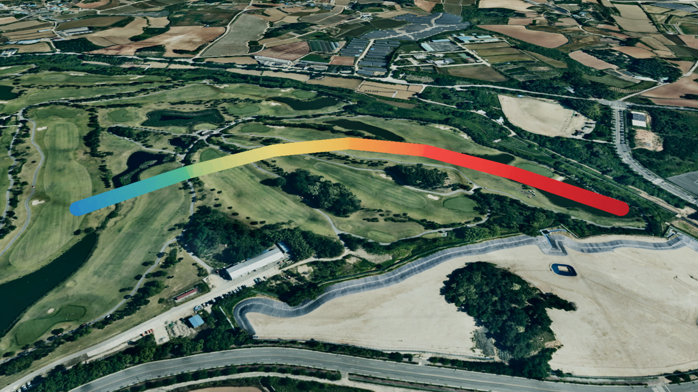

선 (Line)
목차

U3dLine은 여러 좌표를 이어 3D 폴리라인을 그립니다.
경계선, 이동 경로, 관측 시선처럼 두께를 가진 선으로 표현할 대상에 사용합니다.
좌표는 Catmull-Rom 곡선으로 보간되므로 점을 듬성듬성 찍어도 매끄럽게 휘어집니다.
선 두께는 화면 픽셀이 아니라 미터 단위로 그려져서, 지도를 확대·축소해도 실제 폭이 유지됩니다.
1. 선 생성하기
U3dLine 생성자로 객체를 만들고, U3dVectorLayer.addGeometry로 레이어에 등록한 뒤 경로 좌표를 지정하면 화면에 표시됩니다.
레이어를 만들고 도형을 등록·제거하는 방법은 3D Geometry 시작하기 - 도형 등록하고 제거하기에서 설명합니다.
좌표를 지정하기 전에는 아무것도 그려지지 않습니다.
API
U3dLine(opt) : 선 객체를 생성하는 생성자
매개변수
opt(object) : 선 생성 옵션opt.name(string) : 객체 이름. 지정하지 않으면 자동으로 생성됩니다opt.color(ColorRepresentation | Array<ColorRepresentation>) : 색상. 배열을 넘기면 좌표를 따라 색이 변하는 그라디언트가 됩니다. 기본값:0xff0000opt.lineWidth(number) : 선 두께(m). 기본값:1opt.divisions(number) : 곡선 표본 간격(m). 작을수록 촘촘하게 그려집니다. 기본값:10opt.wireframe(boolean) : 와이어프레임 표시 여부opt.coordinates(Array<GeoPositionVector3>) : 경로 좌표 배열 (위경도, EPSG:4326)opt.properties(KeyValue) : 사용자 정의 속성정보
1. 선 생성 예제
좌표 세 개를 이어 두께 5m의 선을 그리는 예제입니다.
경계선이나 이동 경로처럼 두께를 가진 선으로 표현할 대상에 사용합니다.
const app = new GeOnDT.U3dAPP({containername: 'map'});
const vectorLayer = new GeOnDT.vector.U3dVectorLayer({name: 'vector'});
const line = new GeOnDT.geom.U3dLine({
name: 'line_01',
color: '#ff3b30',
lineWidth: 5 // 두께 5m
});
vectorLayer.addGeometry(line); // 벡터 레이어에 등록
// 경로 좌표를 지정하면 그때 선이 만들어집니다.
line.setPositions([
new THREE.Vector3(126.9380, 37.5190, 30),
new THREE.Vector3(126.9395, 37.5200, 30),
new THREE.Vector3(126.9410, 37.5190, 30)
]);
2. 경로 지정하기
경로는 위경도 좌표의 배열로 지정합니다.
좌표 전체를 한 번에 넣으려면 setPositions를, 하나씩 이어 붙이려면 addPosition을 사용합니다.
좌표의 세 번째 값은 고도(m)이며 선의 중심이 지나는 높이가 됩니다.
지형 높이를 자동으로 조회하거나 따라가지 않으므로, 지면을 따라 놓으려면 각 지점의 지형 고도를 더합니다.
지형 고도는 app.getHeightAtGeographicPoint({x, y})로 조회하며, 지형 로딩이 끝난 뒤에 호출해야 실제 값을 얻습니다.
고리 모양으로 그리려면 첫 좌표를 배열 끝에 한 번 더 넣습니다.
API
U3dLine.setPositions(coordinates) : 경로 좌표 배열 전체를 지정하는 함수
매개변수
coordinates(Array<GeoPositionVector3>) : 경로 좌표 배열 (위경도, EPSG:4326)
API
U3dLine.addPosition(x, y, z) : 경로 끝에 좌표를 하나 추가하는 함수
매개변수
x(number) : 경도y(number) : 위도z(number) : 고도(m)
API
U3dLine.getPositions() : 지정된 위경도 좌표 배열을 반환하는 함수
반환값
return(Array<GeoPositionVector3>) : 위경도 좌표 배열 (EPSG:4326)
API
U3dLine.getVertex() : 변환된 월드 좌표 배열을 반환하는 함수
반환값
return(Array<WorldPositionVector3>) : 좌표 배열 (월드 좌표, EPSG:3857)
1. 좌표를 하나씩 추가하는 예제
사용자가 화면을 클릭할 때마다 경로를 이어 붙이는 경우에 사용합니다.
line.addPosition(126.9380, 37.5190, 30);
line.addPosition(126.9395, 37.5200, 30);
line.addPosition(126.9410, 37.5190, 30);
2. 고리 모양으로 그리는 예제
구역 경계처럼 시작점으로 되돌아오는 선을 그릴 때 사용합니다.
const coordinates = [
new THREE.Vector3(126.9380, 37.5190, 30),
new THREE.Vector3(126.9395, 37.5200, 30),
new THREE.Vector3(126.9410, 37.5190, 30)
];
// 첫 좌표를 끝에 다시 넣어 고리를 만듭니다.
line.setPositions([...coordinates, coordinates[0]]);
3. 두께와 곡선 조절하기
두께는 setLineWidth로 바꿉니다.
단위는 미터이며, 지도를 확대·축소해도 실제 폭이 유지됩니다.
divisions는 곡선을 몇 미터 간격으로 표본화할지 정하는 값입니다.
값이 작을수록 표본이 많아져 곡선이 매끄러워집니다.
같은 경로에서 1은 436개, 10은 43개, 50은 8개 구간으로 그려집니다.
API
U3dLine.setLineWidth(width) : 선 두께를 설정하는 함수
매개변수
width(number) : 선 두께(m)
API
U3dLine.getLineWidth() : 현재 선 두께를 반환하는 함수
반환값
return(number) : 선 두께(월드 단위). 위도 보정이 적용되어 있어 지정한 미터 값과 다를 수 있습니다
API
U3dLine.setParam(param) : 여러 속성을 한 번에 갱신하는 함수
매개변수
param(object) : 변경할 속성 객체param.lineWidth(number) : 선 두께(m)param.divisions(number) : 곡선 표본 간격(m)param.color(ColorRepresentation) : 색상param.wireframe(boolean) : 와이어프레임 표시 여부param.shadow(boolean) : 그림자 사용 여부
API
U3dLine.getParam() : 현재 속성을 반환하는 함수
반환값
return(object) : 두께·표본 간격·색상 등 현재 속성 객체
1. 두께 변경 예제
선 두께는 미터 단위라, 지도를 확대·축소해도 실제 폭이 유지됩니다.
중요도가 높은 구간만 굵게 두어 강조할 수 있습니다.
line.setLineWidth(12); // 두께 12m
2. 곡선을 매끄럽게 다듬는 예제
간격을 좁히면 표본이 늘어 곡선이 부드러워집니다.
가까이 확대해 보는 선에 사용합니다.
line.setParam({divisions: 2}); // 2m 간격으로 촘촘하게
3. 각진 선으로 만드는 예제
간격을 넓히면 표본이 줄어 제어점을 직선으로 이은 형태에 가까워집니다.
꺾인 경로를 그대로 보여줘야 할 때 사용합니다.
line.setParam({divisions: 100}); // 간격을 넓혀 제어점을 잇는 형태에 가깝게
4. 색상과 투명도 설정하기
색상은 setColor, 투명도는 setOpacity로 바꿉니다.
setColor에 색상 하나를 넘기면 선 전체가 그 색이 됩니다.
색상 배열을 넘기면 좌표를 따라 색이 변하는 그라디언트가 되며, 배열 길이는 좌표 개수와 같아야 합니다.
API
U3dLine.setColor(color) : 색상을 설정하는 함수
매개변수
color(ColorRepresentation | Array<ColorRepresentation>) : 색상 값 또는 색상 배열
API
U3dLine.setOpacity(value) : 투명도를 설정하는 함수
매개변수
value(number) : 투명도(0~1).0이면 완전 투명,1이면 불투명
API
U3dLine.getOpacity() : 현재 투명도를 반환하는 함수
반환값
return(number | undefined) : 투명도(0~1)
1. 단색 지정 예제
선 전체를 한 가지 색으로 칠하고, 아래 지형이 비치도록 투명도를 낮추는 경우입니다.
line.setColor('#00b3ff');
line.setOpacity(0.5);
2. 그라디언트 예제
좌표가 세 개인 선에 색상 세 개를 넘기면 구간마다 색이 이어집니다.
line.setColor(['#ff0000', '#ffff00', '#00ff00']);
5. 표면에 붙이기
drapeOnSurface는 선을 위에서 아래로 투영해 지형과 모델의 표면에 얹습니다.
원본 좌표는 그대로 두고 화면에 그려지는 형상만 바꾸므로, clearSurfaceDrape로 언제든 원래 모습으로 되돌릴 수 있습니다.
지형 위를 따라가는 경로나 건물 위를 지나는 선을 표현할 때 사용합니다.
비동기 함수이며 표본 수와 교차 결과를 담은 객체를 반환합니다.
표면과 만나지 않은 표본은 원래 높이를 유지합니다.
API
U3dLine.drapeOnSurface(options) : 선을 지형·모델 표면에 투영하는 함수
매개변수
options(object) : 투영 옵션options.app(U3dApp) : 대상 레이어를 조회할 앱. 필수options.offset(number) : 표면보다 높이거나 낮출 거리(m). 기본값:0options.divisions(number) : 표본 간격(m). 생략하면 선의divisions를 사용합니다
반환값
return(Promise<object | undefined>) : 결과 객체. 입력이 잘못되었거나 새 호출로 대체되면undefinedreturn.sampleCount(number) : 만든 표본 수return.hitCount(number) : 표면과 만나 높이가 갱신된 표본 수return.missCount(number) : 표면과 만나지 않아 원래 높이를 유지한 표본 수
API
U3dLine.clearSurfaceDrape() : 투영을 취소하고 원본 좌표로 되돌리는 함수
1. 지형 표면에 붙이는 예제
등산로나 관로처럼 지면을 따라가는 경로를 표현할 때 사용합니다.offset을 조금 주면 선이 지형에 묻히지 않고 표면 위에 뜹니다.
const result = await line.drapeOnSurface({
app: app,
offset: 3, // 표면에서 3m 띄웁니다.
divisions: 5 // 5m 간격으로 표본화합니다.
});
console.log(result); // {sampleCount: 89, hitCount: 89, missCount: 0}
2. 원래 모습으로 되돌리는 예제
원본 좌표는 그대로 남아 있으므로 언제든 투영 전 형태로 되돌릴 수 있습니다.
line.clearSurfaceDrape();
6. 속성정보와 해제
도형에는 id, 이름, 업무 데이터 같은 부가 정보를 key-value 형태로 담아 둘 수 있습니다.
새 속성을 넣을 때는 addProperties, 기존 값을 바꿀 때는 changeProperties, 전체를 통째로 교체할 때는 setProperties를 사용합니다.
더 이상 쓰지 않는 선은 dispose로 정리합니다.
API
U3dLine.getProperties() : 사용자 정의 속성정보를 반환하는 함수
반환값
return(KeyValue) : 사용자 정의 속성정보
API
U3dLine.setProperties(input) : 사용자 정의 속성정보 전체를 설정하는 함수
매개변수
input(KeyValue | string) : 속성 객체 또는 JSON 문자열
API
U3dLine.addProperties(key, value) : 속성정보를 하나 추가하는 함수
매개변수
key(string) : 속성 식별키value(*) : 속성 값
API
U3dLine.changeProperties(key, value) : 기존 속성정보의 값을 변경하는 함수
매개변수
key(string) : 변경할 속성 식별키value(*) : 속성 값
API
U3dLine.removeProperties(key) : 속성정보를 제거하는 함수
매개변수
key(string) : 제거할 속성 식별키
API
U3dLine.setShadow(enabled) : 그림자 사용 여부를 설정하는 함수
매개변수
enabled(boolean) : 그림자 사용 여부. 기본값:true
API
U3dLine.isShadow() : 그림자 사용 여부를 반환하는 함수
반환값
return(boolean) : 그림자 사용 여부
API
U3dLine.dispose() : 선과 관련 리소스를 해제하는 함수
1. 속성정보 다루기 예제
line.addProperties('구간명', '북측 경계');
line.addProperties('관리번호', 'L-0042');
line.changeProperties('구간명', '남측 경계'); // 기존 값 변경
line.removeProperties('관리번호'); // 속성 제거
console.log(line.getProperties()); // {구간명: '남측 경계'}
2. 해제 예제
레이어에서 먼저 제거한 뒤 해제합니다.
vectorLayer.removeGeometry(line);
line.dispose();